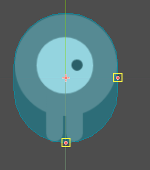
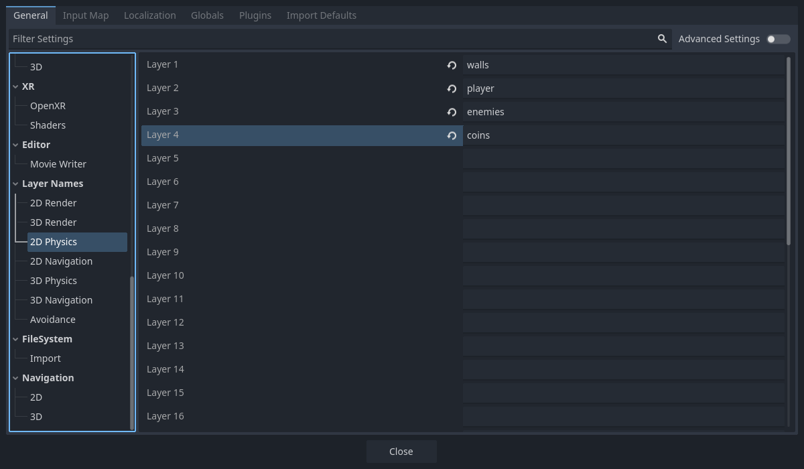
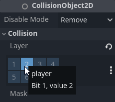
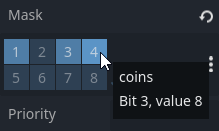

Giới thiệu về vật lý
Trong phát triển game, bạn thường cần biết khi nào hai đối tượng trong game giao nhau hoặc tiếp xúc với nhau. Việc này được gọi là phát hiện va chạm (collision detection). Khi phát hiện va chạm, bạn thường muốn một điều gì đó xảy ra. Việc này được gọi là phản hồi va chạm (collision response).
Godot cung cấp một số collision object trong 2D và 3D để hỗ trợ cả phát hiện lẫn phản hồi va chạm. Việc quyết định dùng loại nào cho dự án có thể gây bối rối. Bạn có thể tránh được rắc rối và đơn giản hóa việc phát triển nếu hiểu cách từng loại hoạt động cũng như ưu nhược điểm của chúng.
Trong bài hướng dẫn này, bạn sẽ học:
Bốn loại collision object của Godot
Cách từng collision object hoạt động
Khi nào và tại sao nên chọn loại này thay vì loại khác
Ghi chú
Các ví dụ trong tài liệu này sẽ dùng đối tượng 2D. Mỗi đối tượng vật lý và collision shape 2D đều có một tương đương trực tiếp trong 3D, và trong hầu hết trường hợp chúng hoạt động gần như giống nhau.
Cảnh báo
Vật lý trong Godot, bất kể physics engine nào, đều không có tính tất định (deterministic). Bản chất tính tất định của physics engine rất phức tạp và liên quan đến nhiều yếu tố, điều này có nghĩa là vật lý không được đảm bảo sẽ chạy giống nhau trong những tình huống trông có vẻ giống hệt nhau.
Collision object
Godot cung cấp bốn loại collision object, tất cả đều kế thừa CollisionObject2D. Ba loại cuối cùng được liệt kê dưới đây là physics body và còn kế thừa thêm PhysicsBody2D.
- Area2D
Node
Area2Dcung cấp khả năng phát hiện và tác động. Chúng có thể phát hiện khi các đối tượng chồng lên nhau và có thể phát signal khi các body đi vào hoặc đi ra. MộtArea2Dcũng có thể được dùng để ghi đè các thuộc tính vật lý, như trọng lực hoặc độ giảm chấn (damping), trong một vùng xác định.
- StaticBody2D
Static body là body không bị physics engine di chuyển. Nó tham gia vào việc phát hiện va chạm, nhưng không di chuyển để phản hồi va chạm. Chúng thường được dùng nhất cho các đối tượng là một phần của môi trường hoặc không cần có hành vi động nào.
- RigidBody2D
Đây là node triển khai mô phỏng vật lý 2D. Bạn không điều khiển
RigidBody2Dtrực tiếp, mà thay vào đó bạn tác dụng lực lên nó (trọng lực, xung lực, v.v.) và physics engine sẽ tính toán chuyển động kết quả. Đọc thêm về cách sử dụng rigid body.
- CharacterBody2D
Một body cung cấp khả năng phát hiện va chạm, nhưng không có vật lý. Mọi chuyển động và phản hồi va chạm đều phải được triển khai trong code.
Physics material
Static body và rigid body có thể được cấu hình để dùng PhysicsMaterial. Điều này cho phép điều chỉnh ma sát và độ nảy của một đối tượng, cũng như đặt nó có tính hấp thụ và/hoặc nhám hay không.
Collision shape
Một physics body có thể chứa bất kỳ số lượng đối tượng Shape2D nào làm node con. Các hình dạng này được dùng để định nghĩa ranh giới va chạm của đối tượng và để phát hiện tiếp xúc với các đối tượng khác.
Ghi chú
Để phát hiện va chạm, phải gán ít nhất một Shape2D cho đối tượng.
Cách phổ biến nhất để gán một hình dạng là thêm CollisionShape2D hoặc CollisionPolygon2D làm node con của đối tượng. Các node này cho phép bạn vẽ hình dạng trực tiếp trong không gian làm việc của trình chỉnh sửa.
Quan trọng
Hãy cẩn thận đừng bao giờ thay đổi tỷ lệ (scale) collision shape trong trình chỉnh sửa. Thuộc tính "Scale" trong Inspector nên giữ nguyên (1, 1). Khi thay đổi kích thước collision shape, bạn nên luôn dùng các tay cầm kích thước, không phải tay cầm scale của Node2D. Thay đổi tỷ lệ một hình dạng có thể dẫn đến hành vi va chạm không mong muốn.

Callback physics process
Physics engine chạy ở một tần số cố định (mặc định là 60 lần lặp mỗi giây). Tần số này thường khác với tốc độ khung hình, vốn dao động tùy theo những gì được kết xuất và tài nguyên sẵn có.
Điều quan trọng là mọi code liên quan đến vật lý đều chạy ở tần số cố định này. Vì vậy Godot phân biệt giữa xử lý vật lý và xử lý idle. Code chạy mỗi khung hình được gọi là xử lý idle và code chạy mỗi physics tick được gọi là xử lý vật lý. Godot cung cấp hai callback khác nhau, mỗi callback cho một tần số xử lý đó.
Callback vật lý, Node._physics_process(), được gọi trước mỗi bước vật lý. Mọi code cần truy cập thuộc tính của một body nên được chạy ở đây. Phương thức này sẽ được truyền một tham số delta, là một số dấu phẩy động bằng thời gian đã trôi qua tính bằng giây kể từ bước trước. Khi dùng tần số cập nhật vật lý mặc định 60 Hz, nó thường sẽ bằng 0.01666... (nhưng không phải luôn luôn, xem bên dưới).
Ghi chú
Bạn nên luôn dùng tham số delta khi phù hợp trong các phép tính vật lý, để game hoạt động đúng nếu bạn thay đổi tần số cập nhật vật lý hoặc nếu thiết bị của người chơi không theo kịp.
Collision layer và mask
Một trong những tính năng va chạm mạnh mẽ nhất nhưng cũng thường bị hiểu sai nhất là hệ thống collision layer. Hệ thống này cho phép bạn xây dựng các tương tác phức tạp giữa nhiều loại đối tượng. Các khái niệm chính là layer và mask. Mỗi CollisionObject2D có 32 physics layer khác nhau mà nó có thể tương tác.
Hãy lần lượt xem xét từng thuộc tính:
- collision_layer
Thuộc tính này mô tả các layer mà đối tượng xuất hiện trong đó. Mặc định, mọi body đều nằm trên layer
1.
- collision_mask
Thuộc tính này mô tả những layer mà body sẽ quét để tìm va chạm. Nếu một đối tượng không nằm trong một trong các layer của mask, body sẽ bỏ qua nó. Mặc định, mọi body đều quét layer
1.
Các thuộc tính này có thể được cấu hình bằng code, hoặc bằng cách chỉnh sửa chúng trong Inspector.
Việc theo dõi bạn đang dùng từng layer cho mục đích gì có thể khó khăn, nên bạn có thể thấy hữu ích khi đặt tên cho các layer mình đang dùng. Tên có thể được đặt trong Project Settings > Layer Names > 2D Physics.

Ví dụ qua GUI
Bạn có bốn loại node trong game: Walls, Player, Enemy và Coin. Cả Player và Enemy đều nên va chạm với Walls. Node Player nên phát hiện va chạm với cả Enemy và Coin, nhưng Enemy và Coin nên bỏ qua nhau.
Hãy bắt đầu bằng cách đặt tên các layer 1-4 là "walls", "player", "enemies" và "coins", rồi đặt mỗi loại node vào layer tương ứng bằng thuộc tính "Layer". Sau đó đặt thuộc tính "Mask" của mỗi node bằng cách chọn các layer mà nó nên tương tác. Ví dụ, cài đặt của Player sẽ trông như thế này:


Ví dụ mã
Trong các lời gọi hàm, layer được chỉ định dưới dạng bitmask. Khi một hàm bật tất cả layer theo mặc định, layer mask sẽ được cho là 0xffffffff. Code của bạn có thể dùng ký hiệu nhị phân, thập lục phân hoặc thập phân cho layer mask, tùy theo sở thích.
Code tương đương với ví dụ trên, nơi các layer 1, 3 và 4 được bật, sẽ như sau:
# Example: Setting mask value for enabling layers 1, 3 and 4
# Binary - set the bit corresponding to the layers you want to enable (1, 3, and 4) to 1, set all other bits to 0.
# Note: Layer 32 is the first bit, layer 1 is the last. The mask for layers 4, 3 and 1 is therefore:
0b00000000_00000000_00000000_00001101
# (This can be shortened to 0b1101)
# Hexadecimal equivalent (1101 binary converted to hexadecimal).
0x000d
# (This value can be shortened to 0xd.)
# Decimal - Add the results of 2 to the power of (layer to be enabled - 1).
# (2^(1-1)) + (2^(3-1)) + (2^(4-1)) = 1 + 4 + 8 = 13
#
# We can use the `<<` operator to shift the bit to the left by the layer number we want to enable.
# This is a faster way to multiply by powers of 2 than `pow()`.
# Additionally, we use the `|` (binary OR) operator to combine the results of each layer.
# This ensures we don't add the same layer multiple times, which would behave incorrectly.
(1 << 1 - 1) | (1 << 3 - 1) | (1 << 4 - 1)
# The above can alternatively be written as:
# pow(2, 1 - 1) + pow(2, 3 - 1) + pow(2, 4 - 1)
Bạn cũng có thể đặt từng bit riêng lẻ bằng cách gọi set_collision_layer_value(layer_number, value) hoặc set_collision_mask_value(layer_number, value) trên bất kỳ CollisionObject2D nào như sau:
# Example: Setting mask value to enable layers 1, 3, and 4.
var collider: CollisionObject2D = $CollisionObject2D # Any given collider.
collider.set_collision_mask_value(1, true)
collider.set_collision_mask_value(3, true)
collider.set_collision_mask_value(4, true)
Có thể dùng các annotation export để export bitmask trong trình chỉnh sửa với giao diện thân thiện với người dùng:
@export_flags_2d_physics var layers_2d_physics
Có thêm các annotation export cho render layer và navigation layer, trong cả 2D và 3D. Xem Export bit flag.
Area2D
Node Area cung cấp khả năng phát hiện và tác động. Chúng có thể phát hiện khi các đối tượng chồng lên nhau và phát signal khi các body đi vào hoặc đi ra. Area cũng có thể được dùng để ghi đè các thuộc tính vật lý, như trọng lực hoặc độ giảm chấn, trong một vùng xác định.
Area2D có ba công dụng chính:
Ghi đè các tham số vật lý (như trọng lực) trong một vùng nhất định.
Phát hiện khi các body khác đi vào hoặc đi ra khỏi một vùng, hoặc những body nào hiện đang ở trong vùng.
Kiểm tra sự chồng lấn với các area khác.
Mặc định, area cũng nhận input từ chuột và màn hình cảm ứng.
StaticBody2D
Static body là body không bị physics engine di chuyển. Nó tham gia vào việc phát hiện va chạm, nhưng không di chuyển để phản hồi va chạm. Tuy nhiên, nó có thể truyền chuyển động hoặc chuyển động xoay cho body va chạm với nó như thể nó đang di chuyển, bằng các thuộc tính constant_linear_velocity và constant_angular_velocity.
Node StaticBody2D thường được dùng nhất cho các đối tượng là một phần của môi trường hoặc không cần có hành vi động nào.
Ví dụ về cách dùng StaticBody2D:
Nền tảng (bao gồm cả nền tảng di động)
Băng chuyền
Tường và các chướng ngại vật khác
RigidBody2D
Đây là node triển khai mô phỏng vật lý 2D. Bạn không điều khiển RigidBody2D trực tiếp. Thay vào đó, bạn tác dụng lực lên nó và physics engine sẽ tính toán chuyển động kết quả, bao gồm va chạm với các body khác và phản hồi va chạm, như nảy, xoay, v.v.
Bạn có thể thay đổi hành vi của rigid body thông qua các thuộc tính như "Mass", "Friction" hoặc "Bounce", có thể đặt trong Inspector.
Hành vi của body cũng bị ảnh hưởng bởi các thuộc tính của thế giới, như được đặt trong Project Settings > Physics, hoặc khi đi vào một Area2D đang ghi đè các thuộc tính vật lý toàn cục.
Khi một rigid body đứng yên và không di chuyển trong một thời gian, nó sẽ chuyển sang trạng thái ngủ. Một body đang ngủ hoạt động giống như static body, và các lực của nó không được physics engine tính toán. Body sẽ thức dậy khi có lực tác dụng, do va chạm hoặc thông qua code.
Sử dụng RigidBody2D
Một trong những lợi ích của việc dùng rigid body là bạn có được rất nhiều hành vi "miễn phí" mà không cần viết code. Ví dụ, nếu bạn làm một game kiểu "Angry Birds" với các khối rơi, bạn chỉ cần tạo các RigidBody2D và điều chỉnh thuộc tính của chúng. Việc xếp chồng, rơi và nảy sẽ được physics engine tự động tính toán.
Tuy nhiên, nếu bạn muốn có một mức kiểm soát nào đó đối với body, bạn nên cẩn thận - việc thay đổi position, linear_velocity hoặc các thuộc tính vật lý khác của rigid body có thể dẫn đến hành vi không mong muốn. Nếu cần thay đổi bất kỳ thuộc tính nào liên quan đến vật lý, bạn nên dùng callback _integrate_forces() thay vì _physics_process(). Trong callback này, bạn có quyền truy cập PhysicsDirectBodyState2D của body, cho phép thay đổi thuộc tính một cách an toàn và đồng bộ chúng với physics engine.
Ví dụ, đây là code cho một tàu vũ trụ kiểu "Asteroids":
extends RigidBody2D
var thrust = Vector2(0, -250)
var torque = 20000
func _integrate_forces(state):
if Input.is_action_pressed("ui_up"):
state.apply_force(thrust.rotated(rotation))
else:
state.apply_force(Vector2())
var rotation_direction = 0
if Input.is_action_pressed("ui_right"):
rotation_direction += 1
if Input.is_action_pressed("ui_left"):
rotation_direction -= 1
state.apply_torque(rotation_direction * torque)
using Godot;
public partial class Spaceship : RigidBody2D
{
private Vector2 _thrust = new Vector2(0, -250);
private float _torque = 20000;
public override void _IntegrateForces(PhysicsDirectBodyState2D state)
{
if (Input.IsActionPressed("ui_up"))
{
state.ApplyForce(_thrust.Rotated(Rotation));
}
else
{
state.ApplyForce(new Vector2());
}
var rotationDir = 0;
if (Input.IsActionPressed("ui_right"))
{
rotationDir += 1;
}
if (Input.IsActionPressed("ui_left"))
{
rotationDir -= 1;
}
state.ApplyTorque(rotationDir * _torque);
}
}
Lưu ý rằng chúng ta không đặt trực tiếp các thuộc tính linear_velocity hoặc angular_velocity, mà tác dụng lực (thrust và torque) lên body và để physics engine tính toán chuyển động kết quả.
Ghi chú
Khi một rigid body chuyển sang trạng thái ngủ, hàm _integrate_forces() sẽ không được gọi. Để ghi đè hành vi này, bạn cần giữ body thức bằng cách tạo va chạm, tác dụng lực lên nó, hoặc tắt thuộc tính can_sleep. Hãy lưu ý rằng điều này có thể ảnh hưởng tiêu cực đến hiệu năng.
Báo cáo tiếp xúc
Mặc định, rigid body không theo dõi các điểm tiếp xúc, vì việc này có thể cần lượng bộ nhớ rất lớn nếu có nhiều body trong scene. Để bật báo cáo tiếp xúc, hãy đặt thuộc tính max_contacts_reported thành một giá trị khác 0. Sau đó có thể lấy các điểm tiếp xúc thông qua PhysicsDirectBodyState2D.get_contact_count() và các hàm liên quan.
Có thể bật theo dõi tiếp xúc qua signal bằng thuộc tính contact_monitor. Xem RigidBody2D để biết danh sách các signal có sẵn.
CharacterBody2D
Các body CharacterBody2D phát hiện va chạm với các body khác, nhưng không bị ảnh hưởng bởi các thuộc tính vật lý như trọng lực hay ma sát. Thay vào đó, chúng phải được người dùng điều khiển bằng code. Physics engine sẽ không di chuyển character body.
Khi di chuyển một character body, bạn không nên đặt trực tiếp position của nó. Thay vào đó, bạn dùng các phương thức move_and_collide() hoặc move_and_slide(). Các phương thức này di chuyển body theo một vector cho trước, và nó sẽ dừng ngay lập tức nếu phát hiện va chạm với body khác. Sau khi body đã va chạm, mọi phản hồi va chạm phải được lập trình thủ công.
Phản hồi va chạm của nhân vật
Sau một va chạm, bạn có thể muốn body nảy lại, trượt dọc theo tường, hoặc thay đổi thuộc tính của đối tượng mà nó va phải. Cách bạn xử lý phản hồi va chạm phụ thuộc vào phương thức bạn đã dùng để di chuyển CharacterBody2D.
move_and_collide
Khi dùng move_and_collide(), hàm sẽ trả về một đối tượng KinematicCollision2D, chứa thông tin về va chạm và body va chạm. Bạn có thể dùng thông tin này để xác định phản hồi.
Ví dụ, nếu bạn muốn tìm điểm trong không gian nơi va chạm xảy ra:
extends PhysicsBody2D
var velocity = Vector2(250, 250)
func _physics_process(delta):
var collision_info = move_and_collide(velocity * delta)
if collision_info:
var collision_point = collision_info.get_position()
using Godot;
public partial class Body : PhysicsBody2D
{
private Vector2 _velocity = new Vector2(250, 250);
public override void _PhysicsProcess(double delta)
{
var collisionInfo = MoveAndCollide(_velocity * (float)delta);
if (collisionInfo != null)
{
var collisionPoint = collisionInfo.GetPosition();
}
}
}
Hoặc để nảy ra khỏi đối tượng va chạm:
extends PhysicsBody2D
var velocity = Vector2(250, 250)
func _physics_process(delta):
var collision_info = move_and_collide(velocity * delta)
if collision_info:
velocity = velocity.bounce(collision_info.get_normal())
using Godot;
public partial class Body : PhysicsBody2D
{
private Vector2 _velocity = new Vector2(250, 250);
public override void _PhysicsProcess(double delta)
{
var collisionInfo = MoveAndCollide(_velocity * (float)delta);
if (collisionInfo != null)
{
_velocity = _velocity.Bounce(collisionInfo.GetNormal());
}
}
}
move_and_slide
Trượt là một phản hồi va chạm phổ biến; hãy tưởng tượng người chơi di chuyển dọc theo tường trong một game góc nhìn từ trên xuống, hoặc chạy lên xuống dốc trong game platformer. Dù bạn có thể tự lập trình phản hồi này sau khi dùng move_and_collide(), move_and_slide() cung cấp một cách tiện lợi để triển khai chuyển động trượt mà không cần viết nhiều code.
Cảnh báo
move_and_slide() tự động đưa timestep vào phép tính, vì vậy bạn không nên nhân vector vận tốc với delta. Điều này không áp dụng cho gravity vì nó là gia tốc và phụ thuộc vào thời gian, nên cần được nhân với delta.
Ví dụ, hãy dùng code sau để tạo một nhân vật có thể đi trên mặt đất (bao gồm cả dốc) và nhảy khi đang đứng trên mặt đất:
extends CharacterBody2D
var run_speed = 350
var jump_speed = -1000
var gravity = 2500
func get_input():
velocity.x = 0
var right = Input.is_action_pressed('ui_right')
var left = Input.is_action_pressed('ui_left')
var jump = Input.is_action_just_pressed('ui_select')
if is_on_floor() and jump:
velocity.y = jump_speed
if right:
velocity.x += run_speed
if left:
velocity.x -= run_speed
func _physics_process(delta):
velocity.y += gravity * delta
get_input()
move_and_slide()
using Godot;
public partial class Body : CharacterBody2D
{
private float _runSpeed = 350;
private float _jumpSpeed = -1000;
private float _gravity = 2500;
private void GetInput()
{
var velocity = Velocity;
velocity.X = 0;
var right = Input.IsActionPressed("ui_right");
var left = Input.IsActionPressed("ui_left");
var jump = Input.IsActionPressed("ui_select");
if (IsOnFloor() && jump)
{
velocity.Y = _jumpSpeed;
}
if (right)
{
velocity.X += _runSpeed;
}
if (left)
{
velocity.X -= _runSpeed;
}
Velocity = velocity;
}
public override void _PhysicsProcess(double delta)
{
var velocity = Velocity;
velocity.Y += _gravity * (float)delta;
Velocity = velocity;
GetInput();
MoveAndSlide();
}
}
Xem Nhân vật kinematic (2D) để biết thêm chi tiết về cách dùng move_and_slide(), bao gồm một dự án demo với code chi tiết.